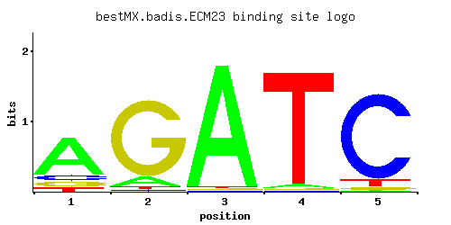

← All factors / TF RECORD
ECM23
YPL021W, SRD2
Non-essential protein of unconfirmed function; affects pre-rRNA processing, may act as a negative regulator of the transcription of genes involved in pseudohyphal growth; homologous to Srd1p
01 / RECOMMENDED MATRIX
Best-performing DNA-binding model.

Fisher’s P-valueNo data
Information content6.65
Max PWM score6.17
Recommended cutoff4.63
View and copy the recommended matrices ↘
Position frequency matrix (PFM)
A | 0.72 0.10 0.97 0.03 0.01 C | 0.11 0.02 0.01 0.01 0.89 G | 0.10 0.86 0.01 0.01 0.03 T | 0.07 0.02 0.01 0.95 0.07
Position count matrix (PCM)
A | 72 10 97 3 1 C | 11 2 1 1 89 G | 10 86 1 1 3 T | 7 2 1 95 7
Position weight matrix (PWM)
A | 0.81 -1.16 1.11 -2.37 -3.47 C | -0.49 -2.20 -2.89 -2.89 1.60 G | -0.59 1.56 -2.89 -2.89 -1.79 T | -1.52 -2.77 -3.47 1.09 -1.52
02 / COMPARATIVE BENCHMARKS
Alternative candidate matrices 0
Historical matrix candidates from the original ScerTF database. Expand a source to inspect its original logo, scores, and matrix values.
No additional matrices in the original archive.
03 / EXPERIMENTAL CONTEXT
Gene-level annotations and interactions.
Genes bound in ChIP-chip experiments 1 genes
No Data
Genes affected by TF deletion 1 genes
No Data
Genes supported by both experiments 1 genes
No Data